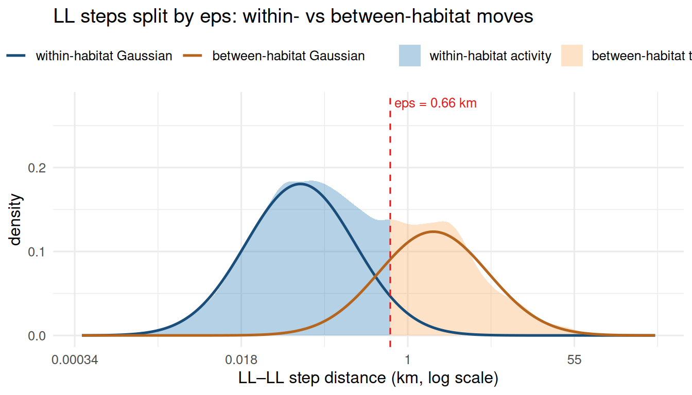
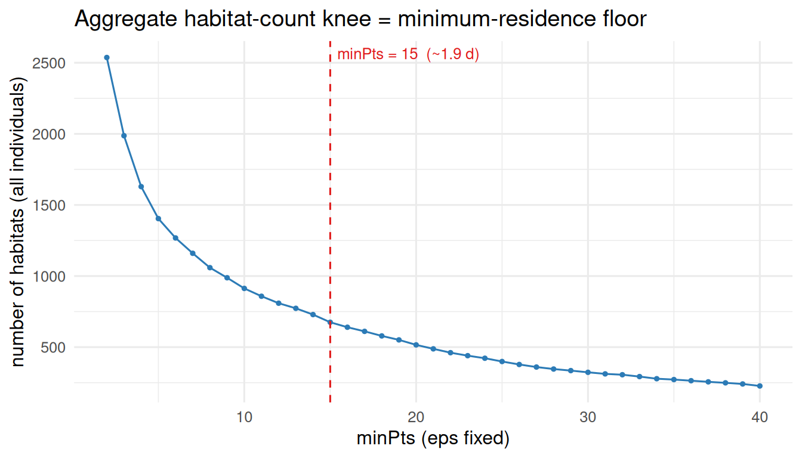
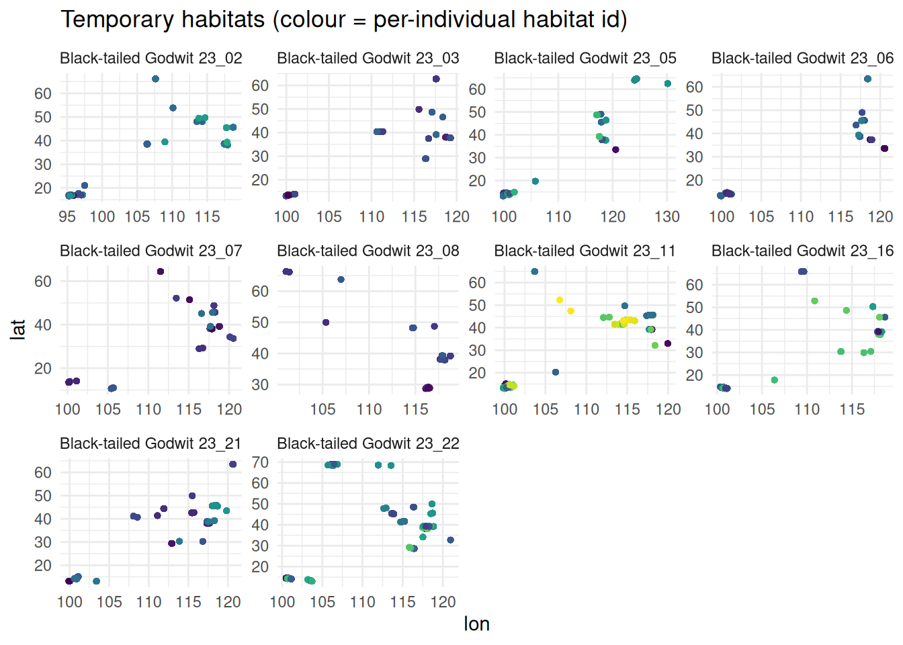

library(movepp)
library(sf)
library(ggplot2)
g <- compute_step_speed(godwit_demo, time_col = "time",
individual_col = "individual", direction = "centered")
seg <- balm_segmentation(g, variable_col = "step_speed",
individual_col = "individual", verbose = FALSE)
stationary <- seg[!is.na(seg$cluster_type) &
seg$cluster_type %in% c("LL", "LH"), ]
# NOTE: `track` is the *segmented* trajectory (carries cluster_type), not raw g
p <- detect_habitat_params(stationary, track = seg,
individual_col = "individual", time_col = "time")
unlist(p[c("eps", "minPts", "regime", "gap_ratio",
"n_components", "sampling_interval_h", "min_residence_days")])
#> eps minPts regime gap_ratio
#> "0.656127455608507" "15" "migratory" "305.806950392131"
#> n_components sampling_interval_h min_residence_days
#> "2" "3" "1.875"Overview
dbscan_habitats() clusters the low-speed points (LL stationary cores plus LH short-stopover arrivals) from balm_segmentation() into spatially-bounded temporary habitats, using standard DBSCAN (Ester et al. 1996) per individual. Its two parameters are derived from the data by detect_habitat_params(), not hard-coded, and each has an explicit behavioural meaning:
-
eps– the within-site movement radius. On the segmented track, the consecutive steps whose both endpoints are stationary (BALM “LL”) are the genuine within-site moves; pooled across individuals and fit with a log-Gaussian mixture, they split at the largest mean-gap into a within-site complex and higher relocation modes.epsis the 95th percentile of the within-site complex. -
minPts– the minimum-residence floor: the knee of the aggregate habitat-count vsminPtscurve ateps. Its meaning is temporal –minPts x sampling-interval= minimum residence duration (reported), or set it directly withmin_residence(days).
detect_habitat_params() also reports the regime (“migratory” when flight (HH) steps exist, else “continuous”) and gap_ratio, the fold-separation between the flight and within-site scales.
Setup
1. Choosing eps: within-habitat activity vs between-habitat transfer
eps is the within-site movement scale, derived from the LL (“stationary”) steps alone. The HH (flight) steps represent the migratory state — large- scale relocations between the wintering and breeding ranges — and belong to the macro scale, not to habitat delineation, so they are excluded here.
The LL fixes are not a single behaviour. While the bird is on its wintering or breeding grounds, the LL–LL steps mix two states: within-habitat activity (resting, foraging, short local transits — a small spatial scale) and between-habitat transfer (moves from one temporary habitat to another — a larger scale). Pooled across individuals and fit with a log-Gaussian mixture, these split at the largest mean-gap; eps is the 95th percentile of the lower, within-habitat complex — exactly the radius that separates within-habitat activity from between-habitat transfer.
The figure overlays the fitted log-Gaussian mixture (refit here with the same set.seed(1) / mclust::Mclust(G = 1:5) call the function uses) on the empirical LL–LL distribution. The dark-blue curve is the within-habitat component(s); eps is its 95th percentile, marked by the dashed line.
gx <- function(co) {
n <- nrow(co); if (n < 2) return(numeric(0)); rr <- pi / 180
a <- sin(diff(co[, 2]) * rr / 2)^2 +
cos(co[-n, 2] * rr) * cos(co[-1, 2] * rr) * sin(diff(co[, 1]) * rr / 2)^2
6371 * 2 * asin(pmin(1, sqrt(a)))
}
ll_steps <- unlist(lapply(unique(seg$individual), function(id) {
s <- seg[seg$individual == id, ]; s <- s[order(s$time), ]
st <- as.character(s$cluster_type); d <- gx(st_coordinates(s))
if (!length(d)) return(numeric(0))
keep <- st[-length(st)] == "LL" & st[-1] == "LL" # both endpoints stationary
d[keep & d > 0]
}))
# Empirical LL–LL density (natural-log scale, matching the eps derivation),
# split at eps: within-habitat (<= eps) vs between-habitat (> eps)
lv <- log(ll_steps)
dn <- stats::density(lv)
xb <- log(p$eps); yb <- stats::approx(dn$x, dn$y, xout = xb)$y
dd <- rbind(
data.frame(x = c(dn$x[dn$x <= xb], xb), y = c(dn$y[dn$x <= xb], yb),
region = "within-habitat activity"),
data.frame(x = c(xb, dn$x[dn$x > xb]), y = c(yb, dn$y[dn$x > xb]),
region = "between-habitat transfer"))
dd$region <- factor(dd$region,
levels = c("within-habitat activity", "between-habitat transfer"))
# Refit the same GMM used to derive eps, and split at the largest mean-gap
mclustBIC <- mclust::mclustBIC # mclust requires this in scope
set.seed(1L)
fit <- mclust::Mclust(sort(lv), G = 1:5, verbose = FALSE)
mu <- fit$parameters$mean
v <- fit$parameters$variance$sigmasq; if (length(v) == 1L) v <- rep(v, fit$G)
w <- fit$parameters$pro
om <- order(mu); mu <- mu[om]; v <- v[om]; w <- w[om]
cut <- if (fit$G > 1L) which.max(diff(mu)) else 1L
loc <- seq_len(cut); rel <- if (cut < fit$G) (cut + 1L):fit$G else integer(0)
mix <- function(idx) if (!length(idx)) rep(0, length(dn$x)) else
Reduce(`+`, lapply(idx, function(i) w[i] * stats::dnorm(dn$x, mu[i], sqrt(v[i]))))
gmm <- rbind(
data.frame(x = dn$x, dens = mix(loc), component = "within-habitat Gaussian"),
data.frame(x = dn$x, dens = mix(rel), component = "between-habitat Gaussian"))
gmm <- gmm[!(gmm$component == "between-habitat Gaussian" & !length(rel)), ]
gmm$component <- factor(gmm$component,
levels = c("within-habitat Gaussian", "between-habitat Gaussian"))
ggplot() +
geom_area(data = dd, aes(x, y, fill = region), alpha = 0.35) +
geom_line(data = gmm, aes(x, dens, colour = component), linewidth = 0.9) +
geom_vline(xintercept = xb, colour = "#E01B1B", linetype = "dashed") +
annotate("text", x = xb, y = Inf, hjust = -0.05, vjust = 1.6, size = 3.4,
colour = "#E01B1B", label = sprintf("eps = %.2f km", p$eps)) +
scale_x_continuous(labels = function(v) signif(exp(v), 2)) +
scale_fill_manual(values = c("within-habitat activity" = "#2C7BB6",
"between-habitat transfer" = "#FDAE61")) +
scale_colour_manual(values = c("within-habitat Gaussian" = "#1A4E7A",
"between-habitat Gaussian" = "#B5651D")) +
labs(x = "LL–LL step distance (km, log scale)", y = "density",
fill = NULL, colour = NULL,
title = "LL steps split by eps: within- vs between-habitat moves") +
theme_minimal(base_size = 12) + theme(legend.position = "top")
2. Choosing minPts: the habitat-count knee
At the chosen eps, the total number of habitats (summed across individuals) falls as minPts rises. The knee – where culling spurious small clusters gives way to eroding real habitats – sets the minimum-residence floor. Its meaning is temporal: minPts x sampling-interval days of residence. Supply min_residence (days) to set this floor behaviourally instead.
ids <- unique(stationary$individual); rr <- pi / 180
mg <- 2:40
agg <- vapply(mg, function(m) sum(vapply(ids, function(id) {
co <- st_coordinates(stationary[stationary$individual == id, ])
if (nrow(co) < m) return(0L)
latm <- mean(co[, 2])
xy <- cbind(co[, 1] * cos(latm * rr) * 111.320, co[, 2] * 111.320)
length(unique({cl <- dbscan::dbscan(xy, eps = p$eps, minPts = m)$cluster; cl[cl > 0]}))
}, integer(1))), integer(1))
ggplot(data.frame(mg, agg), aes(mg, agg)) +
geom_line(colour = "#2C7BB6") + geom_point(size = 0.9, colour = "#2C7BB6") +
geom_vline(xintercept = p$minPts, colour = "#E01B1B", linetype = "dashed") +
annotate("text", x = p$minPts, y = Inf, hjust = -0.05, vjust = 1.6, size = 3.4,
colour = "#E01B1B",
label = sprintf("minPts = %d (~%.1f d)", p$minPts, p$min_residence_days)) +
labs(x = "minPts (eps fixed)", y = "number of habitats (all individuals)",
title = "Aggregate habitat-count knee = minimum-residence floor") +
theme_minimal(base_size = 12)
3. Delineated temporary habitats
hab <- dbscan_habitats(stationary, individual_col = "individual",
eps = p$eps, minPts = p$minPts)
tapply(hab$cluster_id, hab$individual, function(z) length(unique(z)))
#> Black-tailed Godwit 23_02 Black-tailed Godwit 23_03 Black-tailed Godwit 23_05
#> 70 39 82
#> Black-tailed Godwit 23_06 Black-tailed Godwit 23_07 Black-tailed Godwit 23_08
#> 50 43 33
#> Black-tailed Godwit 23_11 Black-tailed Godwit 23_16 Black-tailed Godwit 23_21
#> 115 90 63
#> Black-tailed Godwit 23_22
#> 90
hc <- st_coordinates(hab)
hd <- data.frame(lon = hc[, 1], lat = hc[, 2],
habitat = factor(hab$cluster_id), individual = hab$individual)
ggplot(hd, aes(lon, lat, colour = habitat)) +
geom_point(size = 1, alpha = 0.8, show.legend = FALSE) +
facet_wrap(~ individual, scales = "free") +
scale_colour_viridis_d() +
labs(x = "lon", y = "lat",
title = "Temporary habitats (colour = per-individual habitat id)") +
theme_minimal(base_size = 11)
hab is the stationary subset with an added integer cluster_id; noise is dropped by default. Downstream steps (compute_mpi(), classify_phases()) consume hab$cluster_id unchanged.
Reference
Ester, M., Kriegel, H.-P., Sander, J., & Xu, X. (1996). A density-based algorithm for discovering clusters in large spatial databases with noise. Proc. KDD-96, 226-231.